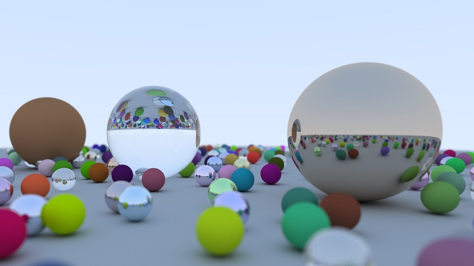

Go语言实现RayTracing

Ray Tracing in one weekend是Peter Shirley ray tracing系列三部曲的第一本，也是学习ray tracing入门比较容易的一本书，原书中附带的有C++版本的code，最近在学习golang, golang中正好有image包，可以直接生成渲染好的jpg文件，那么就用golang来改写了一遍, 顺便测试一下吹爆了的goroutine的性能到底有多么的强大。(Ps:Ray Tracing in one weekend的原pdf资料和C++源码可以关注页面右上方的公众号回复[raytracer]获取。)
上面所示的就是最终得到的渲染图。Let's go!
使用goroutine实验结果：
| 图像宽 | 图像高 | 采样次数 | 耗时 |
|---|---|---|---|
| 800 | 600 | 10 | 1m5.6609528s |
| 800 | 600 | 100 | 4m56.9397481s |
| 1920 | 1080 | 40 | 电脑卡顿,停止了测试 |
不使用gorutine实验结果：
| 图像宽 | 图像高 | 采样次数 | 耗时 |
|---|---|---|---|
| 800 | 600 | 10 | 2m45.2675409s |
| 800 | 600 | 100 | 27m4.1514669s |
| 1920 | 1080 | 40 | 时间太长,停止了测试 |
C++单线程版800, 600, 100 : 9m
下面是源码：
package main
import (
"fmt"
"image"
"image/color"
"image/jpeg"
"log"
"math"
"math/rand"
"os"
"sync"
"time"
)
/* 3D Vectors */
type Vec3 struct {
e [3]float32
}
func NewVec3(x, y, z float32) Vec3 { return Vec3{e: [3]float32{x, y, z}} }
func (v *Vec3) X() float32 { return v.e[0] }
func (v *Vec3) Y() float32 { return v.e[1] }
func (v *Vec3) Z() float32 { return v.e[2] }
func (v *Vec3) R() float32 { return v.e[0] }
func (v *Vec3) G() float32 { return v.e[1] }
func (v *Vec3) B() float32 { return v.e[2] }
func (v Vec3) Dot(other Vec3) float32 { return v.e[0]*other.e[0] + v.e[1]*other.e[1] + v.e[2]*other.e[2] }
func (v Vec3) ScalarMul(s float32) Vec3 { return NewVec3(s*v.X(), s*v.Y(), s*v.Z()) }
func (v Vec3) Norm() float32 { return float32(math.Sqrt(float64(v.e[0]*v.e[0] + v.e[1]*v.e[1] + v.e[2]*v.e[2]))) }
func (v Vec3) R2() float32 { return v.e[0]*v.e[0] + v.e[1]*v.e[1] + v.e[2]*v.e[2] }
func (v Vec3) Add(other Vec3) Vec3 {
return Vec3{[3]float32{v.e[0] + other.e[0], v.e[1] + other.e[1], v.e[2] + other.e[2]}}
}
func (v Vec3) Prod(other Vec3) Vec3 {
return Vec3{[3]float32{v.e[0] * other.e[0], v.e[1] * other.e[1], v.e[2] * other.e[2]}}
}
func (v Vec3) Sub(other Vec3) Vec3 {
return Vec3{[3]float32{v.e[0] - other.e[0], v.e[1] - other.e[1], v.e[2] - other.e[2]}}
}
func (v Vec3) Cross(other Vec3) Vec3 {
return Vec3{[3]float32{v.e[1]*other.e[2] - v.e[2]*other.e[1], -v.e[0]*other.e[2] + v.e[2]*other.e[0],
v.e[0]*other.e[1] - v.e[1]*other.e[0]}}
}
func (v Vec3) Normalize() Vec3 {
l := v.Norm()
return Vec3{[3]float32{v.e[0] / l, v.e[1] / l, v.e[2] / l}}
}
func (v Vec3) Gamma(g float32) Vec3 {
return Vec3{[3]float32{float32(math.Pow(float64(v.e[0]), 1.0/float64(g))),
float32(math.Pow(float64(v.e[1]), 1.0/float64(g))),
float32(math.Pow(float64(v.e[2]), 1.0/float64(g)))}}
}
func (v Vec3) Reflect(n Vec3) Vec3 {
if n.Norm()-1.0 > 0.001 {
n = n.Normalize()
}
return v.Sub(n.ScalarMul(2 * v.Dot(n)))
}
func (v Vec3) Refract(n Vec3, niOverNt float32, refracted *Vec3) bool {
uv := v.Normalize()
dt := uv.Dot(n)
discriminant := float64(1.0 - (niOverNt*niOverNt)*(1-dt*dt))
if discriminant > 0 {
*refracted = uv.Sub(n.ScalarMul(dt)).ScalarMul(niOverNt).Sub(n.ScalarMul(float32(math.Sqrt(discriminant))))
return true
} else {
return false
}
}
/* 3D Rays */
type Ray struct{ A, B Vec3 }
func NewRay(a, b Vec3) Ray { return Ray{a, b} }
func (r Ray) Origin() Vec3 { return r.A }
func (r Ray) Direction() Vec3 { return r.B }
func (r Ray) Point(t float32) Vec3 { return r.Origin().Add(r.Direction().ScalarMul(t)) }
/* 3D Spheres */
type Sphere struct {
center Vec3
radius float32
material Material
}
func NewSphere(center Vec3, radius float32, mat Material) Sphere {
return Sphere{center, radius, mat}
}
func (s Sphere) Hit(r Ray, tMin, tMax float32, rec *HitRecord) bool {
oc := r.Origin().Sub(s.center)
a := r.Direction().R2()
b := oc.Dot(r.Direction())
c := oc.R2() - s.radius*s.radius
delta := b*b - a*c
if delta > 0 {
tmp := (-b - float32(math.Sqrt(float64(delta)))) / a
if tmp < tMax && tmp > tMin {
rec.t = tmp
rec.p = r.Point(rec.t)
rec.normal = rec.p.Sub(s.center).ScalarMul(1.0 / s.radius)
rec.material = s.material
return true
}
tmp = (-b + float32(math.Sqrt(float64(delta)))) / a
if tmp < tMax && tmp > tMin {
rec.t = tmp
rec.p = r.Point(rec.t)
rec.normal = rec.p.Sub(s.center).ScalarMul(1.0 / s.radius)
rec.material = s.material
return true
}
}
return false
}
func RandomSpherePoint() Vec3 {
p := NewVec3(1, 1, 1)
for p.R2() >= 1.0 {
p = NewVec3(rand.Float32(), rand.Float32(), rand.Float32()).ScalarMul(2.0).Sub(NewVec3(1, 1, 1))
}
return p
}
func RandomDiskPoint() Vec3 {
p := NewVec3(1, 1, 1)
for p.R2() >= 1.0 {
p = NewVec3(rand.Float32(), rand.Float32(), 0).ScalarMul(2.0).Sub(NewVec3(1, 1, 0))
}
return p
}
/* Camera */
type Camera struct {
origin,
lowerLeftCorner,
horizontal,
vertical,
u, v, w Vec3
lensRadius float32
}
func NewCamera(lookFrom, lookAt, vup Vec3, vFov, aspect, aperture, focusDist float32) Camera {
theta := float64(vFov * math.Pi / 180.0)
halfHeight := float32(math.Tan(theta / 2.0))
halfWidth := aspect * halfHeight
origin := lookFrom
w := lookFrom.Sub(lookAt).Normalize()
u := vup.Cross(w).Normalize()
v := w.Cross(u)
lowerLeftCorner := origin.Sub(u.ScalarMul(halfWidth * focusDist))
lowerLeftCorner = lowerLeftCorner.Sub(v.ScalarMul(halfHeight * focusDist))
lowerLeftCorner = lowerLeftCorner.Sub(w.ScalarMul(focusDist))
horizontal := u.ScalarMul(2.0 * halfWidth * focusDist)
vertical := v.ScalarMul(2.0 * halfHeight * focusDist)
return Camera{
origin,
lowerLeftCorner,
horizontal,
vertical,
u, v, w,
aperture / 2.0,
}
}
func (c Camera) GetRay(s, t float32) Ray {
rd := RandomDiskPoint().ScalarMul(c.lensRadius)
offset := c.u.ScalarMul(rd.X()).Add(c.v.ScalarMul(rd.Y()))
dir := c.lowerLeftCorner
dir = dir.Add(c.horizontal.ScalarMul(s))
dir = dir.Add(c.vertical.ScalarMul(t))
dir = dir.Sub(c.origin)
dir = dir.Sub(offset)
return Ray{A: c.origin.Add(offset), B: dir}
}
func Schlick(cosine float32, refIdx float32) float32 {
r0 := (1.0 - refIdx) / (1.0 + refIdx)
r0 = r0 * r0
return r0 + (1.0-r0)*float32(math.Pow(float64(1.0-cosine), 5.0))
}
/* example scenes to render */
func RandomScene() HitableList {
var world HitableList
world = append(world, NewSphere(NewVec3(0, -1000, 0), 1000, NewLambertian(0.5, 0.5, 0.5)))
for a := -11; a < 11; a++ {
for b := -11; b < 11; b++ {
matProb := rand.Float32()
center := NewVec3(float32(a) + 0.9*rand.Float32(),0.3, float32(b) + 0.9 * rand.Float32())
if center.Sub(NewVec3(4,0.2,0)).Norm() > 0.9 {
if matProb < 0.5 {
world = append(world, NewSphere(center, 0.2, NewLambertian(
rand.Float32()*rand.Float32(),
rand.Float32()*rand.Float32(),
rand.Float32()*rand.Float32())))
} else if matProb < 0.95 {
world = append(world, NewSphere(center, 0.3, NewMetal(
0.5*(1+rand.Float32()),
0.5*(1+rand.Float32()),
0.5*(1+rand.Float32()),
0.5*(1+rand.Float32()),
)))
} else {
world = append(world, NewSphere(center, 0.2, NewDielectric(1.5)))
}
}
}
}
world = append(world, NewSphere(NewVec3(0, 1, 0), 1.0, NewDielectric(1.5)))
world = append(world, NewSphere(NewVec3(-4, 1, 0), 1.0, NewLambertian(0.4, 0.2, 0.1)))
world = append(world, NewSphere(NewVec3(4, 1, 0), 1.0, NewMetal(0.7, 0.6, 0.5, 0.0)))
return world
}
func BasicScene() HitableList {
var world HitableList
world = append(world, NewSphere(NewVec3(0, 0, -1), 0.5, NewLambertian(0.1, 0.2, 0.5)))
world = append(world, NewSphere(NewVec3(0, -100.5, -1), 100, NewLambertian(0.8, 0.8, 0.0)))
world = append(world, NewSphere(NewVec3(1, 0, -1), 0.5, NewMetal(0.8, 0.6, 0.2, 0.0)))
world = append(world, NewSphere(NewVec3(-1, 0, -1), 0.5, NewDielectric(1.5)))
world = append(world, NewSphere(NewVec3(-1, 0, -1), -0.45, NewDielectric(1.5)))
return world
}
func PosCameraScene() HitableList {
var world HitableList
R := float32(math.Cos(math.Pi / 4.0))
world = append(world, NewSphere(NewVec3(-R, 0, -1), R, NewLambertian(0, 0, 1)))
world = append(world, NewSphere(NewVec3(R, 0, -1), R, NewLambertian(1, 0, 0)))
return world
}
/* Hitables */
type HitRecord struct {
t float32
p, normal Vec3
material Material
}
type Hitable interface {
Hit(r Ray, tMin, tMax float32, rec *HitRecord) bool
}
type HitableList []Hitable
func (h HitableList) Hit(r Ray, tMin, tMax float32, rec *HitRecord) bool {
tmpRec := NewHitrec()
hitAnything := false
closestSoFar := tMax
for i := 0; i < len(h); i++ {
if h[i].Hit(r, tMin, closestSoFar, &tmpRec) {
hitAnything = true
closestSoFar = tmpRec.t
*rec = tmpRec
}
}
return hitAnything
}
func Color(r Ray, world Hitable, depth int) Vec3 {
rec := NewHitrec()
if world.Hit(r, 0.001, math.MaxFloat32, &rec) {
scattered := NewRay(NewVec3(0, 0, 0), NewVec3(0, 0, 0))
attenuation := NewVec3(0, 0, 0)
if depth < 5 && rec.material.Scatter(r, &rec, &attenuation, &scattered) {
return attenuation.Prod(Color(scattered, world, depth+1))
} else {
return NewVec3(0, 0, 0)
}
} else {
unitDir := r.Direction().Normalize()
t := 0.5 * (unitDir.Y() + 1.0)
return NewVec3(1.0, 1.0, 1.0).ScalarMul(1.0 - t).Add(NewVec3(0.5, 0.7, 1.0).ScalarMul(t))
}
}
/* Materials */
const (
NullMaterial = 0
Lambertian = 1
Metal = 2
Dielectric = 3
)
type Material struct {
mat uint8
albedo Vec3
fuzz, refIdx float32
}
func NewLambertian(ax, ay, az float32) Material {
return Material{Lambertian, NewVec3(ax, ay, az), 0, 0}
}
func NewMetal(ax, ay, az, fuzz float32) Material {
return Material{Metal, NewVec3(ax, ay, az), fuzz, 0}
}
func NewDielectric(refIdx float32) Material {
return Material{Dielectric, NewVec3(1.0, 1.0, 1.0), 0, refIdx}
}
func (m Material) Scatter(r Ray, rec *HitRecord, attenuation *Vec3, scattered *Ray) bool {
switch m.mat {
case Lambertian:
target := rec.p.Add(rec.normal).Add(RandomSpherePoint())
*scattered = NewRay(rec.p, target.Sub(rec.p))
*attenuation = m.albedo
return true
case Metal:
reflected := r.Direction().Normalize().Reflect(rec.normal)
*scattered = NewRay(rec.p, reflected.Add(RandomSpherePoint().ScalarMul(m.fuzz)))
*attenuation = m.albedo
return scattered.Direction().Dot(rec.normal) > 0
case Dielectric:
outwardNormal := NewVec3(0, 0, 0)
reflected := r.Direction().Reflect(rec.normal)
niOverNt := float32(0.0)
*attenuation = NewVec3(1, 1, 1)
refracted := NewVec3(0, 0, 0)
var reflectProb, cosine float32
if r.Direction().Dot(rec.normal) > 0 {
outwardNormal = rec.normal.ScalarMul(-1.0)
niOverNt = m.refIdx
cosine = m.refIdx * r.Direction().Dot(rec.normal) / r.Direction().Norm()
} else {
outwardNormal = rec.normal
niOverNt = 1.0 / m.refIdx
cosine = -1.0 * r.Direction().Dot(rec.normal) / r.Direction().Norm()
}
if r.Direction().Refract(outwardNormal, niOverNt, &refracted) {
reflectProb = Schlick(cosine, m.refIdx)
} else {
*scattered = NewRay(rec.p, reflected)
reflectProb = 1.0
}
if rand.Float32() < reflectProb {
*scattered = NewRay(rec.p, reflected)
} else {
*scattered = NewRay(rec.p, refracted)
}
return true
default:
return true
}
}
func NewHitrec() HitRecord {
return HitRecord{
t:-1.0, p:NewVec3(0, 0, 0), normal:NewVec3(0, 0, 0),
material: Material{mat:NullMaterial, albedo: NewVec3(0, 0, 0)}}
}
func NormalVersion(nx, ny, ns int) { //图像宽,高,采样次数
focusDist, aperture := float32(10.0), float32(0.1)
lookFrom := NewVec3(20, 3, 5)
lookAt := NewVec3(0, 0, 0)
cam := NewCamera(lookFrom, lookAt, NewVec3(0,1,0),20, float32(nx)/float32(ny), aperture, focusDist)
world := RandomScene()
file, err := os.Create("1.jpg")
if err != nil {
log.Fatal(err)
}
defer file.Close()
rgba := image.NewRGBA(image.Rect(0, 0, nx-1, ny-1))
start := time.Now()
for j := 0; j < ny; j++ {
for i := 0; i < nx; i++ {
col := NewVec3(0, 0, 0)
for s := 0; s < ns; s++ {
u := (float32(i) + rand.Float32()) / float32(nx)
v := (float32(j) + rand.Float32()) / float32(ny)
r := cam.GetRay(u, v)
col = col.Add(Color(r, world, 0))
}
col = col.ScalarMul(1.0 / float32(ns)).Gamma(2.0)
rgba.Set(i, ny-j, color.RGBA{R: uint8(255 * col.R()), G: uint8(255 * col.G()), B: uint8(255 * col.B()), A: 255})
}
}
jpeg.Encode(file, rgba, nil)
elapsed := time.Since(start)
fmt.Println(elapsed)
}
func ConcurrentVersion(nx, ny, ns int){ //图像宽,高,采样次数
focusDist, aperture := float32(10.0), float32(0.1)
lookFrom := NewVec3(20, 3, 5)
lookAt := NewVec3(0, 0, 0)
cam := NewCamera(lookFrom, lookAt, NewVec3(0,1,0),20, float32(nx)/float32(ny), aperture, focusDist)
world := RandomScene()
file, err := os.Create("2.jpg")
if err != nil {
log.Fatal(err)
}
defer file.Close()
rgba := image.NewRGBA(image.Rect(0, 0, nx-1, ny-1))
start := time.Now()
var wg sync.WaitGroup
wg.Add(ny * nx)
for j := 0; j < ny; j++ {
for i := 0; i < nx; i++ {
go func(i,j int,rgba *image.RGBA) {
defer wg.Done()
col := NewVec3(0, 0, 0)
for s := 0; s < ns; s++ {
u := (float32(i) + rand.Float32()) / float32(nx)
v := (float32(j) + rand.Float32()) / float32(ny)
r := cam.GetRay(u, v)
col = col.Add(Color(r, world, 0))
}
col = col.ScalarMul(1.0 / float32(ns)).Gamma(2.0)
rgba.Set(i, ny-j, color.RGBA{R: uint8(255 * col.R()), G: uint8(255 * col.G()), B: uint8(255 * col.B()), A: 255})
}(i, j, rgba)
}
}
wg.Wait()
jpeg.Encode(file, rgba, nil)
elapsed := time.Since(start)
fmt.Println(elapsed)
}
func main() {
//800, 600, 10 : 1m5.6609528s
//800, 600, 100 : 4m56.9397481s
//1920, 1080, 40 : 开的go routine太多了,PC卡顿严重,停止了测试
ConcurrentVersion(800, 600, 100)
//800, 600, 10 : 2m45.2675409s
//800, 600, 100 : 27m4.1514669s
//1920, 1080, 40 : 时间太长,停止了测试
//NormalVersion(800, 600, 100)
//C++单线程版800, 600, 100 : 9m
}
- 原文作者：Binean
- 原文链接：https://bzhou830.github.io/posts/20200302RayTracingInOneWeekend/
- 版权声明：本作品采用知识共享署名-非商业性使用-禁止演绎 4.0 国际许可协议进行许可，非商业转载请注明出处（作者，原文链接），商业转载请联系作者获得授权。